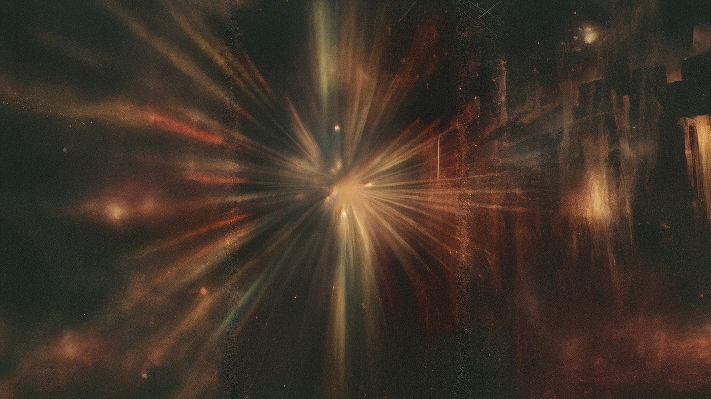
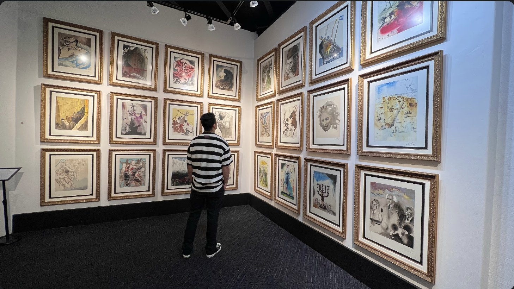

Mentographs
What would consciousness look like if we could actually see it?
Since I can remember, I've been obsessed with consciousness and the subconscious. The idea of what happens after we leave our flesh has always fascinated me. It became a common motif in my work, and I found myself searching deeper and deeper,
Eventually, that obsession turned into a different question: what would consciousness look like if we could actually see it?
Mentographs began as an attempt to answer that.
The collection is made up of 222 1/1 mixed-media works, each one imagining a different glimpse of consciousness. Its memories, distortions, connections, fragmentation, and whatever might exist beyond the physical body.
I don't think any of these questions have definitive answers, and there's something beautiful about that. Mentographs isn't an attempt to explain consciousness. It's an attempt to visualize the mystery of it.
These are the collection's real traits, and how many of the 222 pieces carry each one — the fewer that carry it, the rarer it is. The Field's own zones are organized around these same traits. Each piece's exact traits appear on-chain in its own panel once your Mentograph is revealed.
The Source

The Source is where Mentographs began.
It started as a single experiment: an attempt to visualize consciousness without giving it a body, face, or physical form. That image became the foundation for everything that followed. I pulled it apart, distorted it, glitched it, layered it, and rebuilt fragments of it again and again until it became 222 different Mentographs.
The Source is not part of the collection because it isn't one of the fragments. It is what the fragments came from.
It exists outside the 222 as the origin of the archive. A reminder that no matter how different each Mentograph becomes, they all came from the same place.
About : Pho
Photon Tide is a Mexican artist whose work explores consciousness, memory, mortality, emotion, and the unknown. His work is rooted in curiosity about the human experience and the things we may never fully understand. Through digital art, AI, mixed media, photography, and collage, he creates surreal and often dreamlike images that sit somewhere between the familiar and the impossible.
Experimentation has always been central to his practice. His work combines distortion, texture, light, color, and abstraction to explore ideas that can be difficult to express through words alone. Rather than searching for definitive answers, much of his work comes from the questions themselves and the different ways art can give form to something intangible.
Photon Tide's work has been exhibited internationally, including solo exhibitions in Rome, New York City, Mexico City, and Milan. His work has also been featured at Sotheby's.


trait-chart.png next to
index.html and it'll appear above automatically, no code changes needed.